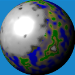

Planetengenerator vs. Landschaftsgenerator

Ich hatte hier schon verschiedentlich über meine Versuche der algorithmischen Generierung von Landschaften - unter anderem als Grundlage für Spiele - berichtet. Bisher war ich mit den Ergebnissen nie so recht zufrieden, denn wir wissen doch alle, dass Welten normalerweise keine Scheiben sind. Daher wollte ich schon lange meine Ideen zur Generierung ion die dritte Dimension ausdehnen...
Ich nutzte dazu unter anderem die unten angegebenen Ressourcen des Internet kombiniert mit einigen Ideen aus den vorangegangenen Versuchen. Der erste unten gezeigte Screenshot stellt Ergebnisse meiner ersten erfolgreichen Versuche dar
Nach einigen Optimierungen hinsichtlich der Performance (Die Unterteilung der Dreiecke des ursprünglichen Icosahedrons geht zwar relativ schnell vonstatten, allerdings ist die Aufbereitung für die Java3D-Darstellung mit einigen Fallstricken versehen gewesen) fügte ich noch die bereits aus der 2D-Variante bekannte Funktion zur Erzeugung von Polkappen hinzu. Dies kann man an einigen Beispielen im darauf folgenden Screenshot sehen.
Einige Angaben zur Statistik: Die hier gezeigten Bilder führen die Subdivision des Icosahedrons insgesamt 6 mal durch. Mit einer Anfangszahl von 20 Dreiecken ergibt sich daraus (jede Iteration vervierfacht die Anzahl der Dreiecke): 20*4*4*4*4*4*4 oder 20 * 4^6 oder allgemeiner ist die Anzahl resultierender Dreiecke bei n Iterationen gleich 20*4^n. Für die hier dargestellten Beispiele ergbit sich somit eine Anzahl von 81920 Dreiecken.
Links
Creating an icosphere mesh in code
Icosahedron
Map Generation on Spherical Planet – Part I
Polygonal Map Generation for Games
Understanding Perlin Noise
Improved Noise reference implementation
Screenshots
{kind=link}
{kind=link}
Artikel, die hierher verlinken
Mercator-Projektion für generierte Planeten
22.05.2017
Nachdem ich neulich endlich auch die dreidimensionale Generierung von Spielwelten erfolgreich ausprobiert hatte, entwickelten sich notgedrungen neue Ideen für weitere Forschungen - eine davon möchte ich hier vorstellen:
Tags
Android Basteln C und C++ Chaos Datenbanken Docker dWb+ ESP Wifi Garten Geo Git(lab|hub) Go GUI Hardware Java Jupyter Komponenten Links Linux Markup Music Numerik PKI-X.509-CA Python QBrowser Rants Raspi Security Software-Test sQLshell TeleGrafana Verschiedenes Video Virtualisierung Windows Upcoming...


Neueste Artikel
-
 S/MIME Email Crypto
S/MIME Email Crypto
Nachdem mich neulich ein Kollege auf eine mir bis dahin unbekannte Möglichkeit aufmerksam gemacht hat, EMail-Funktionalitäten ohne EMail-Server und -Konto zu testen holte ich ein altes Projekt aus der Versenkung hervor...
Weiterlesen... -
Bill Withers, Stevie Wonder, John Legend - Lean On Me
Ein weiterer ganz großer Künstler wird mal gefeiert...
Weiterlesen... -
 8TB Raid5 mit Raspberry Pi
8TB Raid5 mit Raspberry Pi
Ich habe mir neulich überlegt, ob man einen Pi als Raid benutzen könnte - aber nicht mit dem ewig gleichen Setup mit 4 USB-Sticks...
Weiterlesen...
Manche nennen es Blog, manche Web-Seite - ich schreibe hier hin und wieder über meine Erlebnisse, Rückschläge und Erleuchtungen bei meinen Hobbies.
Wer daran teilhaben und eventuell sogar davon profitieren möchte, muß damit leben, daß ich hin und wieder kleine Ausflüge in Bereiche mache, die nichts mit IT, Administration oder Softwareentwicklung zu tun haben.
Ich wünsche allen Lesern viel Spaß und hin und wieder einen kleinen AHA!-Effekt...
PS: Meine öffentlichen GitHub-Repositories findet man hier.